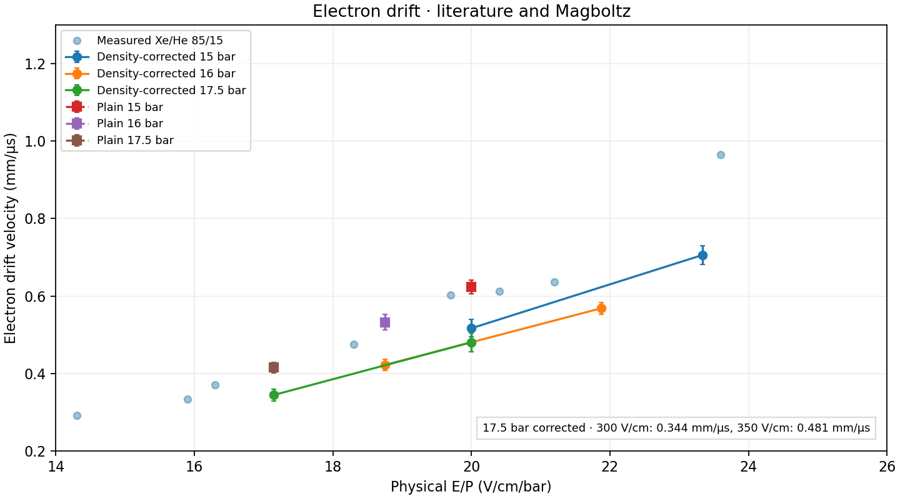
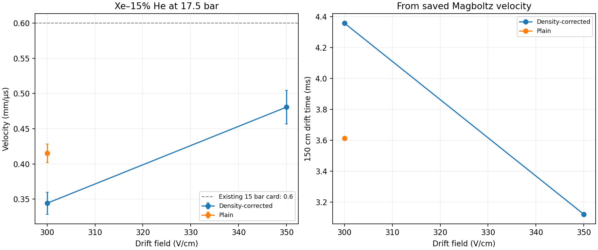
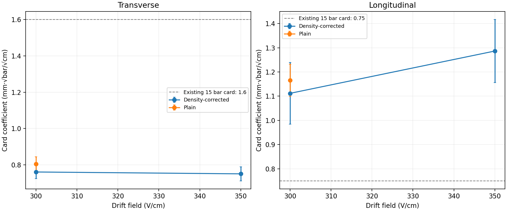

Magboltz source filename: 11.21; internal header: 11.20.
SHA-256: efa3244aa7c033872864997ee005b50d3732a59080e3957d13be9bf6d9569cbc. Gas composition is by mole fraction. The model-density
setting follows the Geant4 material density at the physical pressure.
Temperatures: 290 K;
collision targets: 400,000,000.
Measured Xe/He points are from McDonald et al.; their physical E/P convention
is described in the handoff.



| Gas | Density | P (bar) | E (V/cm) | E/N (Td) | v (mm/µs) | Dₜ (mm·√bar/√cm) | Dₗ (mm·√bar/√cm) | Time (s) |
|---|---|---|---|---|---|---|---|---|
| Xe_85_He_15 | Density-corrected | 15.000 | 300.0 | 0.07316 | 0.51670 ± 0.02279 | 0.7709 ± 0.0359 | 1.3970 ± 0.1207 | 81.5 |
| Xe_85_He_15 | Density-corrected | 15.000 | 350.0 | 0.08535 | 0.70570 ± 0.02442 | 0.8856 ± 0.0468 | 1.4954 ± 0.0845 | 82.2 |
| Xe_85_He_15 | Density-corrected | 16.000 | 300.0 | 0.06815 | 0.42190 ± 0.01426 | 0.7655 ± 0.0298 | 1.1655 ± 0.0945 | 80.9 |
| Xe_85_He_15 | Density-corrected | 16.000 | 350.0 | 0.07951 | 0.56840 ± 0.01518 | 0.8046 ± 0.0198 | 1.3691 ± 0.0631 | 80.8 |
| Xe_85_He_15 | Density-corrected | 17.500 | 300.0 | 0.06172 | 0.34420 ± 0.01566 | 0.7611 ± 0.0358 | 1.1118 ± 0.1270 | 80.2 |
| Xe_85_He_15 | Density-corrected | 17.500 | 350.0 | 0.07201 | 0.48070 ± 0.02399 | 0.7509 ± 0.0384 | 1.2867 ± 0.1302 | 76.5 |
| Xe_85_He_15 | Plain | 15.000 | 300.0 | 0.08008 | 0.62360 ± 0.01715 | 0.8635 ± 0.0388 | 1.4240 ± 0.0790 | 81.6 |
| Xe_85_He_15 | Plain | 16.000 | 300.0 | 0.07507 | 0.53220 ± 0.01958 | 0.8458 ± 0.0343 | 1.3828 ± 0.0575 | 80.8 |
| Xe_85_He_15 | Plain | 17.500 | 300.0 | 0.06864 | 0.41520 ± 0.01329 | 0.8057 ± 0.0390 | 1.1654 ± 0.0663 | 76.7 |
HDF5 data, inputs and raw output: pilot_geant4_15bar_300Vcm · pilot_geant4_15bar_350Vcm · pilot_geant4_16bar_300Vcm · pilot_geant4_16bar_350Vcm · pilot_geant4_17p5bar_300Vcm · pilot_geant4_17p5bar_350Vcm · pilot_plain_15bar_300Vcm · pilot_plain_16bar_300Vcm · pilot_plain_refined_17p5bar_300Vcm · CERN Magboltz source